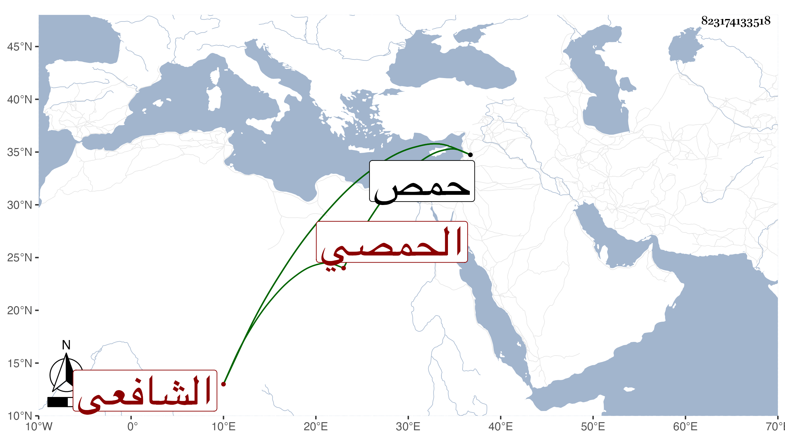

0902Sakhawi.DawLamic.ITO20230111-ara1.EIS1600.823174133518
Biography ID: 823174133518
342
عبد الرحمن بن محمد بن خالد بن موسي الزين بن الشمس الحمصي الشافعي ويعرف بابن زهرة بالفتح ولد في رمضان سنة سبع وسبعين وسبعمائة بحمص ونشأ بها فحفظ القرآن وغالب المنهاج وألفية النحو وعرض على جماعة وتنزل في طلبة النورية رفيقا للحمصى وسمع على أبي اسحق ابراهيم بن الحسن بن ابراهيم ابن حسن البعلي ويعرف بابن فرعون ختم البخاري بسماعه لجميعه على الحجار وحدث لقيته بحمص فقرأت عليه مسموعه وذكر لي أنه أحضر عند الزين بن رجب والشمس ابن مفلح وابن التقي الحنبليين ولكنه أعرض عن ذلك وباشر عند والده وكان جلدا قويا. مات في شوال سنة أربع وستين.
